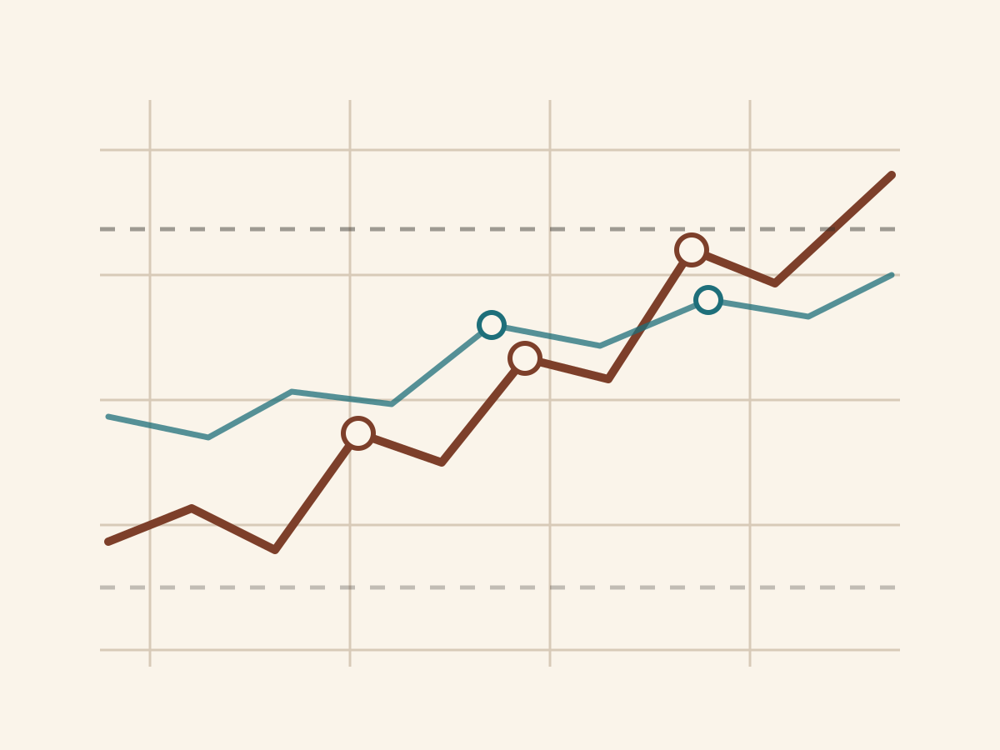
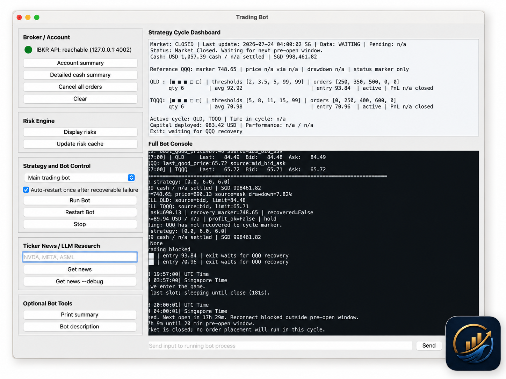
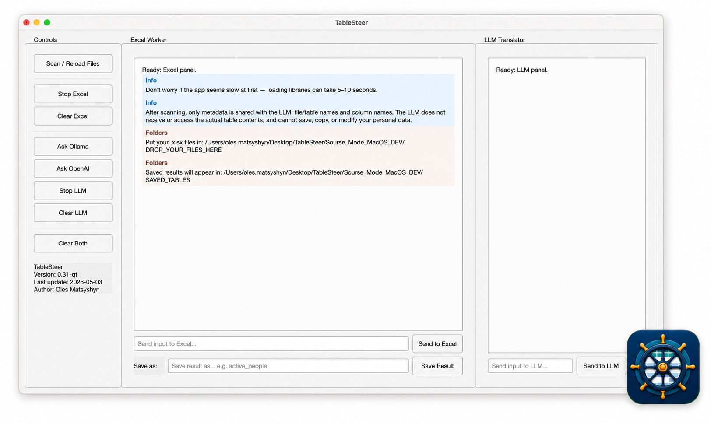

Research infrastructure
Quantitative Systems for Finance and Data
My work combines mathematical modeling, scientific computing, machine learning, and practical software. I build tools for market analysis, automated trading, risk control, and everyday work with structured data.

This chapter presents selected systems for financial modeling, automated trading, risk analysis, and human-friendly data processing. The goals are clear measurement, reliable execution, and tools that separate useful information from noise.
Research Philosophy
Financial markets are noisy, change over time, and are easy to overfit. But they are not completely random. As in physics, a difficult system often becomes easier to study when we choose a useful scale, make clear assumptions, and test them against data.
These assumptions can weaken or fail, so models must be checked and updated. The goal is not to predict every market movement. It is to identify useful structure, measure risk, and separate longer-term signals from short-term noise.
Some parts of the trading platform remain confidential. I therefore use this page to share selected results and system ideas, with compact notebook previews and short case studies to be added gradually after launch rather than exposing the complete trading logic.
Quantitative Trading System
An evolving trading platform that connects market data, portfolio monitoring, risk controls, and automated execution through Interactive Brokers. It can track the account, run scheduled strategies, record performance, and recover after common interruptions.

Current Capabilities
Automated IBKR connectivity and recovery
Connects directly to Interactive Brokers. It detects interrupted connections, reconnects automatically, and restores market-data subscriptions.
Scheduled strategy execution
Runs trading logic on a configurable schedule. It evaluates market conditions, positions, and strategy rules.
Order tracking and reporting
Tracks submitted and filled orders, current positions, average entry prices, cash balances, portfolio value, and strategy performance. It writes trading statistics and state information to persistent files for later inspection and reporting.
Self-healing execution and restart recovery
Restores the latest known strategy state after an interruption, application restart, laptop sleep, or connectivity failure. This lets execution continue from the correct stage rather than restarting blindly.
Visual strategy interface
Provides a graphical control panel with strategy controls, execution logs, IBKR connection status, and a visual cycle bar. The bar shows the current strategy cycle, capital deployment, performance, time in cycle, and exit conditions.
External data and communication integrations
Connects to the OpenAI API, Finnhub API, and Telegram bots for market analysis, risk notes, automated reports, and remote strategy-status updates.
Execution safety controls
Includes paper- and live-account awareness, dry-run operation, configurable order-size limits, duplicate-order protection, fallback price handling, and controlled behavior when markets are closed or data are temporarily unavailable.
Market, portfolio, and cash monitoring
Collects historical and current market data, monitors holdings and account value, follows related instruments, and tracks cash balances and currency exposure, including SGD-USD conversion support.
Near-term roadmap
HMM-based dynamic risk control
Integrate Hidden Markov Models for market-regime and stress detection, using the inferred state to dynamically control cash reserves, portfolio exposure, and the timing and scale of capital deployment.
Constrained portfolio optimization
Introduce portfolio optimization subject to practical restrictions such as maximum position sizes, concentration limits, leverage limits, liquidity requirements, transaction costs, risk budgets, and permitted asset groups.
Plain-English strategy generation
Develop an AI interface that converts a strategy written in natural language into a structured, testable, and executable trading strategy, including entry rules, exit rules, position sizing, risk constraints, required data, and reporting logic.
Long-term research and product directions
Beyond the near-term roadmap, I am exploring several longer-term ideas. These are research directions rather than current implementation commitments.
Scenario intelligence
Develop tools for market-scenario simulation, reverse scenario analysis, and studying how geopolitical or economic shocks may spread across assets and sectors.
Quantum approaches to finance
Explore whether methods inspired by quantum dynamics, probability, and optimization can provide useful tools for selected financial problems.
HMM Regime Detection
I use Hidden Markov Models to identify broad market states, such as calm and stressed periods. The aim is not to predict the market day by day. Instead, the model looks for risk conditions that last long enough to guide cash levels, exposure, and capital deployment.
I evaluated a proprietary HMM-based regime model across nearly 27 years of market data, from 1999 to 2026. When the model classified the market as high risk, realized volatility over the following five trading days was approximately 2.2-2.4 times higher than during low-risk periods. Over a 21-day horizon, it remained approximately 2.1-2.2 times higher.
The inferred risk probability had a correlation of 0.44-0.50 with five-day forward volatility and 0.47-0.58 with 21-day forward volatility. In historical stress tests, the more stable model configuration identified 3 of 5 major crisis periods, including average high-risk probabilities of 93% during the Global Financial Crisis, 64% during the COVID crash, and 56% during the European debt crisis.
During selected calm-market periods, the model stayed low, with average risk probabilities of only 1.7-6.1%. Detected regimes lasted for roughly 26-30 trading days on average. This suggests that the model captures sustained market conditions rather than daily noise.
The next step is to extend this regime framework toward trend identification and noise filtering, and to use the resulting signal for dynamic cash reserves, risk exposure, and capital deployment.
These validation results use only information that would have been available at the time. They are not a guarantee of future performance and should not be interpreted as precise prediction of crisis onset.
Local data tools
TableSteer
Data tools for people
Development status: paused while I focus on my main professional work. The existing prototype remains an example of how plain-English interfaces can make local data tools more accessible.
Many companies, universities, and banks still depend on Excel for everyday data work. Pandas can process these files quickly and precisely, but most spreadsheet users do not know pandas. They do know how to describe the result they want in ordinary English.
TableSteer connects these two worlds. Pandas controls the Excel data, while an LLM translates a plain-English request into a pandas command that the user can inspect and run.

Ask in plain English
Describe the required action without writing Python or pandas code.
Review the command
The LLM returns a pandas command. Nothing runs automatically: the user can read and check the command first.
Run it locally
After approval, pandas performs the operation on the local Excel file and saves the requested result.
Your data stays under your control
TableSteer is designed so that spreadsheet contents are not sent to the LLM. When an external LLM is selected, it receives only the metadata needed to form a command, such as file, table, and column names. A local Ollama option can keep the translation step on the user's computer.
Before any operation changes the data, TableSteer shows the generated pandas command for review. Safeguards are designed to stop commands that try to transmit the dataset, contact unapproved external services, or store copies outside the allowed output locations.
Product concept
A useful local tool, not another subscription
The original product concept was simple: a one-time purchase of USD 0.99 for a permanent local tool that helps people work with their own datasets. The application itself would not require a continuing subscription.
The idea behind TableSteer is simple: data tools should be available to people who understand their work but do not know pandas or Python.
Possible future directions
These ideas may be revisited if development resumes or an appropriate collaboration emerges.
More files and visual tools
Expand beyond Excel to other structured-data formats and add clear charts, summaries, and visual exploration.
Personal finance analysis
Allow users to process bank statements locally, organize spending, identify recurring costs, and create useful visual summaries without sending transaction data to an LLM.
Dietary analysis and local food guides
Help users study their food records and build practical guides around products that are actually available where they live.
A future opt-in community guide could allow people to share useful product recommendations by city. For example, users in Singapore could find familiar local products and approaches that worked for other people nearby. Personal dietary records should remain private unless a user explicitly chooses to share selected information.
Professional opportunities
Quantitative roles
I am open to permanent opportunities in quantitative research and development. If you are considering me for a quantitative developer or researcher position, please feel free to contact me at oles.matsyshyn@gmail.com.
I would be glad to demonstrate the systems I have already built and discuss the combination of mathematical modeling, scientific computing, AI, and software development that I could bring to your team.
A quantitative-focused version of my CV is available below.
Quantitative CVSupport and collaboration
This project is developed independently in my free time and at my own expense. If you are interested in supporting its development or discussing a collaboration, contact me at oles.matsyshyn@gmail.com. External funding has not yet been sought, so I am not currently able to offer paid positions.
Rights and Attribution
The quantitative trading system, architecture, strategy-state logic, risk-control design, and implementation notes described here are proprietary work by Oles Matsyshyn. Public text on this page is for portfolio and research-presentation purposes only. It is not financial advice, does not guarantee future performance, and does not disclose full strategy logic, credentials, private APIs, or account-sensitive implementation details.